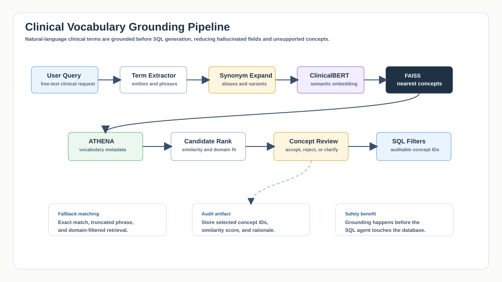
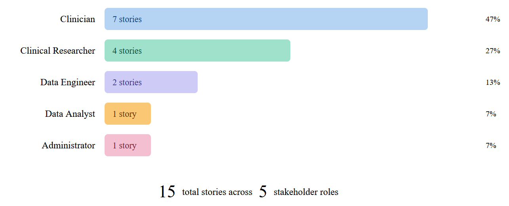
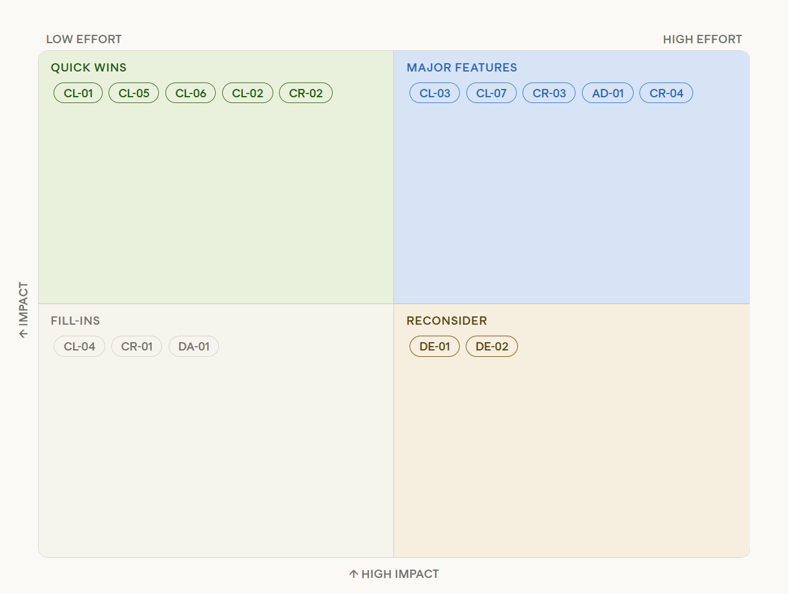
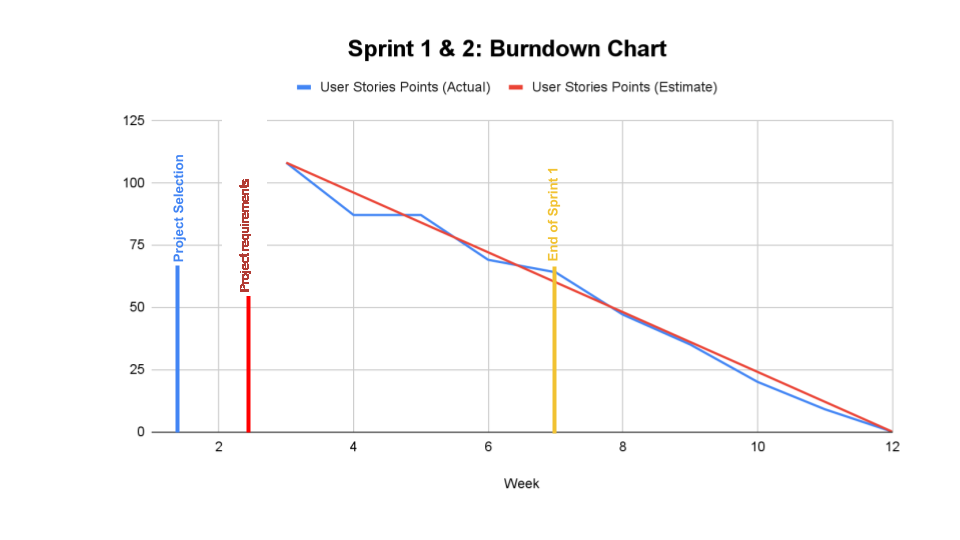

Agentic healthcare analytics architecture for auditable natural-language questions over structured clinical data.
Sanitized Portfolio Report
Agentic Healthcare Analytics Chatbot
A public-safe case study of a multi-agent analytics workflow that translates natural-language healthcare questions into auditable structured-data analysis.
Domain: Healthcare Analytics
Focus: Agentic AI
Year: 2026
Status: Paraphrased Summary
Fast Scan
What this report proves
A recruiter-readable summary of the technical signal, methods, evidence, and public-data boundary.
Intent routing, schema grounding, SQL generation, DuckDB execution, ClinicalBERT/FAISS vocabulary resolution, and HITL review.
Light-background architecture diagrams, agent workflow notes, user-story distribution, and sanitized capstone design traces.
No patient records, partner identifiers, reviewer details, private schemas, credentials, or raw institutional screenshots are published.
PII-Safe Publication Note
This report is a rewritten portfolio version of an academic project. It does not reproduce the raw submission, source data, screenshots, account details, personal names, emails, phone numbers, or institution-specific submission metadata. The emphasis is on system design, trade-offs, and transferable engineering judgment.
Executive Summary
The project explored how a healthcare analytics assistant could help clinical and research users ask questions over structured health data without hiding the analytical path behind a black-box response. The core design used a multi-agent workflow: one agent interprets the question, another maps the request to a data schema, another proposes SQL or statistical operations, and review steps check whether the output should be revised before a final answer is shown.
The main portfolio value is not simply that the system uses large language models. The stronger signal is the architecture around them: schema grounding, query traceability, human review checkpoints, privacy boundaries, and result explanations that make the analytical process inspectable.
Portfolio framing: This is best presented as an agentic analytics architecture project,
not as a claim of clinical deployment or patient-facing decision support.
Portfolio Signal Snapshot
This section is written for fast recruiter review and machine parsing. It foregrounds the technical surface area, architectural judgment, and risk controls without overstating deployment maturity.
Role Signal
Agentic AI systems designer for structured healthcare analytics
Core Stack
LangGraph, SQL, DuckDB, OMOP CDM, FAISS, ClinicalBERT
Engineering Depth
Schema grounding, validation, routing, and audit trails
Business Value
Reduces analytics friction while preserving clinical oversight
Agentic AI
LLM Orchestration
Healthcare Data
Natural-Language SQL
LangGraph
DuckDB
OMOP CDM
Clinical NLP
Human-in-the-Loop
Responsible AI
Problem Context
Healthcare datasets are often structured, relational, and highly sensitive. Analysts may understand the clinical question but not the exact schema. Technical users may understand the database but need domain clarification before writing safe queries. A useful assistant therefore has to do more than generate SQL: it must clarify intent, ground terms to known fields, expose assumptions, and preserve auditability.
Data Complexity
Healthcare tables can involve encounters, diagnoses, medications, procedures, measurements, and cohort definitions that must be joined carefully.
Trust Requirements
Users need to see how a result was produced, which assumptions were made, and where uncertainty remains.
Risk Boundaries
Public-facing summaries should avoid raw patient examples, private schemas, operational credentials, or sensitive institutional details.
Sanitized Architecture Diagram
The original report included a high-level architecture view. The public portfolio version below recreates the same design idea without showing private schemas, source screenshots, client references, or raw clinical examples.
Natural-Language Query to Reviewed Analytical Output
User Question
Clinical or research query in natural language.
Router Agent
Classifies intent and separates clinical terms from structural terms.
Intent Clarifier
Checks ambiguity and asks for clarification when confidence is low.
Reasoning Agent
Decomposes the request into validated analytical steps.
SQL Agent
Generates schema-grounded DuckDB SQL using pruned metadata.
Data Registry
Stores query results as lightweight references instead of passing dataframes.
Stats Layer
Runs whitelisted descriptive, comparison, trend, or survival functions.
Reviewed Output
Returns tables, charts, interpretation, limitations, and suggested follow-ups.
Curated Figure Gallery
These visuals combine light-background recreations of the core architecture with selected extracted planning graphs from the original capstone materials. The public version excludes raw data tables, report cover pages, institution-specific UI screenshots, and research-paper screenshots.






Analytical Objectives
- Convert natural-language research questions into structured analytical tasks while preserving the user's intent.
- Use schema and vocabulary grounding before query generation, so the assistant does not invent fields or use unsupported concepts.
- Generate SQL and statistical steps that can be inspected, rerun, or corrected by a human reviewer.
- Separate reasoning, querying, charting, and answer composition into smaller units that are easier to test.
- Keep the public portfolio version focused on architecture and safeguards rather than private data or unverified deployment claims.
Technical Notes From Source Report
System Design
1. Question Intake
The first step classifies the user question by analytical type. Examples include cohort counting, variable comparison, trend analysis, descriptive statistics, and chart requests. The workflow should also detect when a question is underspecified and ask for clarification rather than forcing a query.
2. Schema Grounding
The assistant maps natural-language concepts to known tables, fields, and controlled vocabulary where available. This grounding step is critical because a plausible answer is not useful if it rests on a fabricated column or an invalid join path.
3. Query Planning
A planning agent decomposes the request into operations such as cohort selection, filtering, joins, aggregation, and statistical tests. The plan becomes an intermediate artifact that can be reviewed before execution.
4. SQL Generation and Validation
The SQL component produces a query from the grounded plan. Validation checks should confirm that tables exist, joins are explainable, filters match the user's intent, and the query avoids unsupported fields.
5. Analysis and Visualization
Once the structured result is available, a tool layer can calculate descriptive statistics or generate charts. The final response should include the answer, the method used, and any limitations that affect interpretation.
6. Human Review
Human-in-the-loop checks are included for high-risk or ambiguous outputs. This is especially important for healthcare analytics, where confident language can create false authority if the underlying query is wrong.
Implementation Decisions
- Agent separation: Separate agents reduce the chance that one prompt has to perform every task at once. This makes failures easier to isolate.
- Traceable intermediate outputs: Intent, schema mapping, query plan, generated SQL, and final answer should each be stored or displayed for audit.
- Guarded generation: The system should treat schema references as constraints, not suggestions. Unsupported fields should trigger revision.
- Review-first framing: The assistant is positioned as an analytics copilot for structured exploration, not as a diagnostic or clinical decision system.
Decision Framework
My design thinking centered on a simple rule: use LLMs where ambiguity exists, and deterministic code where correctness can be enforced. The table and chart below make those trade-offs explicit.
| Decision Area | Option Considered | Selected Approach | Reasoning |
|---|---|---|---|
| State management | Pass full dataframes between graph nodes | Data registry with lightweight references | Preserves LangGraph reliability and avoids memory pressure from serialized tabular data. |
| SQL generation | Give the model the full schema every time | Schema pruning with curated metadata | Reduces hallucinated columns, irrelevant joins, and prompt clutter. |
| Clinical interpretation | Return fluent answers directly from an LLM | Compute first, explain second | Tables and statistics remain deterministic; language is used only to summarize computed results. |
| Ambiguous user intent | Force the system to guess | Clarification checkpoint | Protects users from confident but wrong analytical paths. |
Qualitative Design Priority Chart
Traceability
Critical
Privacy Boundaries
Critical
SQL Correctness
Critical
Latency
Managed
Model Ambition
Constrained
Evaluation Approach
The strongest evaluation strategy for this type of project is multi-layered. Instead of grading only the final natural-language answer, the system should be checked at each stage where an error could enter the workflow.
Intent Accuracy
Did the workflow correctly identify the analytical task, required variables, filters, and requested output format?
SQL Validity
Did the query use valid fields, defensible joins, appropriate aggregation, and interpretable filters?
Answer Faithfulness
Did the final explanation reflect the computed result without adding unsupported clinical claims?
Limitations
- An LLM can produce fluent explanations even when a query plan is flawed, so validation cannot depend on wording quality alone.
- Schema grounding works only as well as the available data dictionary, metadata, and domain concept mapping.
- The public version intentionally omits raw data and deployment details, so it should be read as an architecture case study rather than a production performance report.
- Healthcare analytics requires domain review before results are used for research, operational, or policy decisions.
Recommended Next Improvements
- Add a test set of sanitized natural-language questions with expected query plans and SQL patterns.
- Add automatic query linting for high-risk operations such as broad joins, missing date filters, and ambiguous cohort definitions.
- Track every generated answer with provenance: question, intent, schema mapping, SQL, result table, reviewer status, and final response.
- Expand the UI so reviewers can approve, reject, or annotate intermediate steps without editing raw prompts.
Selected Sources From Original Report
The source report cited papers and technical references that informed the agentic reasoning, clinical NLP, feature engineering, and data-standard choices. The portfolio version keeps a curated source trail rather than reproducing the full bibliography.
Yao et al. (2023), ReAct: Synergizing Reasoning and
Acting in Language Models.
Wang et al. (2023), Plan-and-Solve Prompting.
Alsentzer et al. (2019), Publicly Available Clinical
BERT Embeddings.
Hollmann et al. (2023), CAAFE: Context-Aware Automated
Feature Engineering for Tabular Datasets.
OHDSI (2024), OMOP Common Data Model v5.4.
LangChain AI (2024), LangGraph: Stateful
Multi-Actor Applications with LLMs.
Recruiter Signal
This project demonstrates the ability to design LLM systems around real operational constraints: privacy, auditability, structured data access, ambiguous user intent, and human oversight. It is most relevant for roles involving agentic AI, analytics engineering, healthcare data products, and responsible AI implementation.
LangGraph
SQL
Agentic AI
Analytics Architecture
Human Review
Auditability